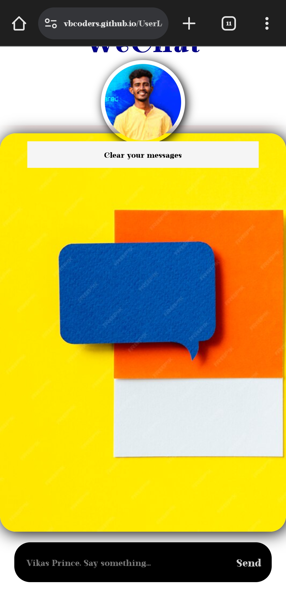

"WeChat"
Creating a chatting application with Firebase integration adds powerful real-time functionality and backend support. Here's a concise breakdown of how you can build a chat app using Android Studio and Firebase:
Android Studio Setup:
Start by setting up a new project in Android Studio and configure Firebase for your app. Follow Firebase documentation to add Firebase to your Android project.
UI Design:
Design the user interface for your chatting application using XML layout files. Create screens for chatting, contact lists, and message threads. Consider using Material Design components for a modern and intuitive UI.
Firebase Integration:
Integrate Firebase Authentication to manage user authentication securely. Allow users to sign up, log in, and manage their accounts. Firebase Realtime Database or Firestore can be used to store and synchronize chat messages in real-time between users.
Real-time Messaging:
Utilize Firebase Realtime Database or Firestore to implement real-time messaging functionality. Set up listeners to detect new messages and update the UI accordingly. Implement features like sending and receiving messages, typing indicators, and message timestamps.
Notifications:
Integrate Firebase Cloud Messaging (FCM) to send push notifications to users when they receive new messages. Implement notification channels to allow users to customize notification settings.
Testing and Debugging:
Test your application thoroughly on different devices and screen sizes to ensure compatibility and responsiveness. Use Android Studio's debugging tools to identify and fix any bugs or issues.
Deployment:
Generate a signed APK and distribute your app to users through the Google Play Store or other distribution channels. Follow Google Play Store guidelines for app submission and deployment.
CALCULATER
Creating a calculator using HTML, CSS, and JavaScript is a common beginner project that allows you to practice your skills in all three technologies. Here's a brief description of how you can approach creating a simple calculator:
HTML Structure:
You'll start by creating the structure of your calculator using HTML. This includes the display area where the numbers and operations will be shown, as well as buttons for numbers, arithmetic operations, and the equal sign.
CSS Styling:
Next, you'll style your calculator using CSS to make it visually appealing. You can customize the appearance of the buttons, display area, and overall layout to suit your design preferences.
JavaScript Functionality:
The most critical part of building a calculator is implementing its functionality using JavaScript. You'll need to write JavaScript code to handle user input, perform arithmetic operations, and update the display accordingly.
Here's a high-level overview of what you'll need to do in JavaScript:
Event Handling: Attach event listeners to the calculator buttons to capture user clicks.
Input Handling: Detect which button the user clicked and handle the input accordingly.
Arithmetic Operations: Implement functions to perform addition, subtraction, multiplication, and division based on user input.
Display Update: Update the display area with the result of the calculations as the user inputs numbers and operations.
"Web Chatting Page with Firebase"
Creating a web chatting page with Firebase integration brings real-time functionality and backend support. Here's a brief overview of how you can develop a web chatting page using Firebase:
Firebase Setup:
Begin by setting up a Firebase project in the Firebase console. Configure Firebase Authentication to manage user authentication securely. Allow users to sign up, log in, and manage their accounts.
Real-time Messaging:
Integrate Firebase Realtime Database or Firestore to enable real-time messaging. Set up listeners to detect new messages and update the UI accordingly. Implement features like sending and receiving messages instantly.
User Interface Design:
Design the user interface for your web chatting page using HTML, CSS, and JavaScript. Create sections for displaying messages, contact lists, and input fields. Ensure a responsive design for compatibility across various devices.
Firebase Cloud Functions:
Implement Firebase Cloud Functions to handle server-side logic, such as sending notifications to users when they receive new messages. Use Cloud Functions to trigger events based on database changes.
Testing and Debugging:
Thoroughly test your web chatting page on different browsers and devices to ensure a seamless user experience. Utilize browser developer tools for debugging and fixing any issues.
Deployment:
Deploy your web chatting page to a web hosting service like Firebase Hosting or Netlify. Follow best practices for web deployment, including optimizing performance and security measures.
